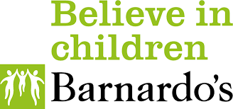
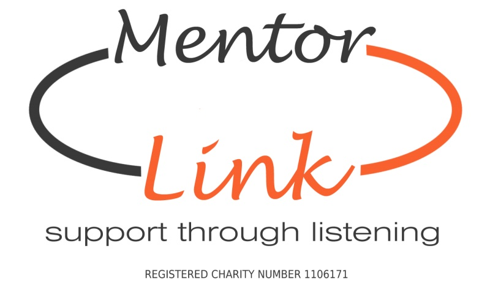

The Children's Society fight child poverty and neglect, and aim to help all children have a better chance in life. Working specifically with children and young people in Britain from disadvantaged backgrounds, their services involve listening to and supporting these people. Specific groups they support are young carers, young refugees and migrants, those in homes where substance misuse is present, and children who have run away from home. Volunteering here can involve the usual campaigning and fundraising, or more direct activities such as befriending, mentoring and counselling.
W: https://careers.childrenssociety.org.uk/volunteering
T: 0300 303 7000
E: supportercare@childrenssociety.org.uk
Barnado's have been helping disadvantaged children since 1867, though their help extends to parents and carers, too. Volunteering with Barnardo's could mean working in one of their local charity shops, or doing essential admin in their offices, but it could also involve working directly with young people at a service. They attract volunteers from all backgrounds, including job-seekers, retired workers, asylum seekers, full-time workers, students, and schoolchildren - all are welcome!
W: https://www.barnardos.org.uk/get-involved/volunteer
T: 0121 550 5271 / 6
Mentor Link supports vulnerable and distressed children and young people by providing them with a volunteer mentor. Mentors, once fully-trained, offer listening support and guidance to these young people during difficult times in their lives, which may include self-harm, bullying, traumatic bereavement or family breakdown. If you think you have what it takes to be a mentor, get in touch.
W: https://www.mentorlink.org.uk/volunteer/
T: 01299 822336
E: enquiries@mentorlink.org.uk